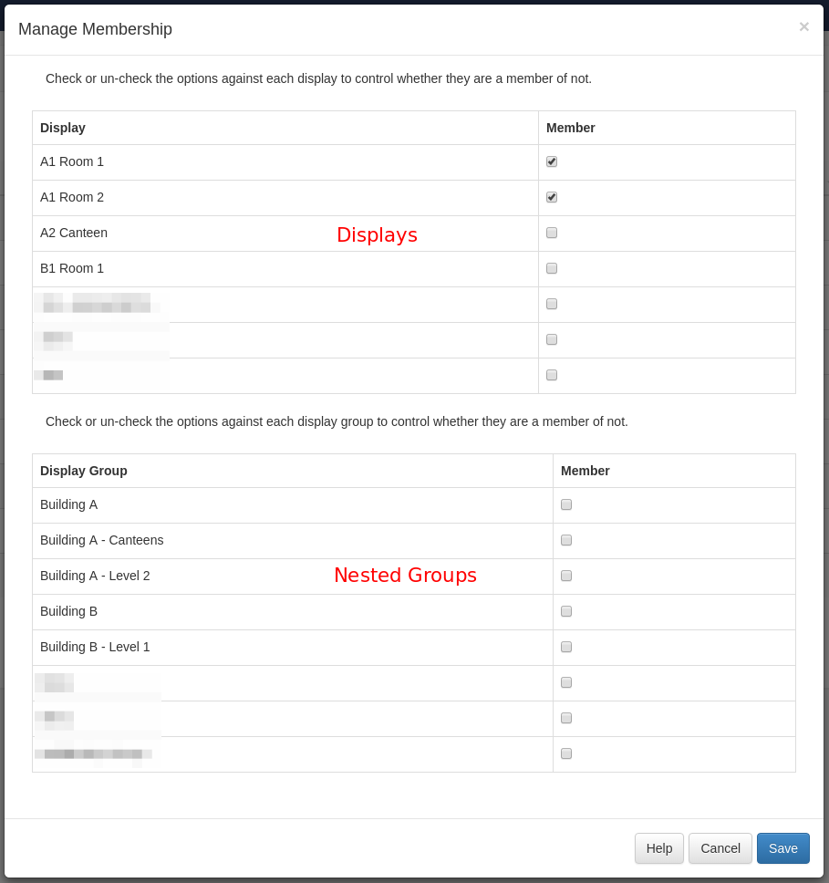

Display Groups
Displays can be assigned to one or more Display Groups for easier Scheduling and Media Assignment.
When a new Display Group is added in the CMS it will be available on the Schedule Calendar for events to be Scheduled against it. Display Groups are born empty and Displays will need to be added.
Add/Edit
Display Groups are added, edited and deleted using the standard forms available on the Display Groups page. If the Group should be dynamic then this can be selected when adding/editing by ticking the "dynamic" check box. Once ticked an extra field will appear allowing entry of one or more regular expressions used to select which Displays belong to that Group.
Members
The membership of a Display Group is either a manual assignment process or is controlled by filter criteria if the group is dynamic. Schedules, Media and Layout Assignments applied to the Display Group will apply to all its members.
Manual Assignment
Display Group Members can be manually assigned using the "Members" option in the row menu for each group. Selecting that option will open a form for managing the assignments of each Display in the CMS. The form shows "Displays" and "Display Groups" for nesting (see below).
A Display can belong to as many Display Groups as required.
Nested Groups
Display Groups can be nested to create complex structures and allow targeted scheduling. For example a Group structure could look like:
- Site 1
- Site 1 - Building A
- Site 1 - Building A - Level 1
- Site 1 - Building A - Level 2
- Site 1 - Building B
The Display membership is set on the lowest level Groups and those groups then belong to the next level up, which in turn belong to the highest level parent "Site 1".
Display Groups are provided as a separate list in the "Members" form so that they can be easily identified. The CMS will not allow a circular reference to be created - this is an assignment that creates a loop (i.e. Site 1 has Site 1 - Building A, and Site 1 - Building A has Site 1.)

Dynamic Groups
Dynamic Groups are configured using the Add/Edit form by ticking the check box for dynamic members and entering filter criteria.
Filter criteria is in the format of Regular expressions, but can also be simple string comparisons. The expressions
should be separated by a comma and can be negated with a - prefix.
For example, all Displays containing "a" but not "b" would be a,-b.